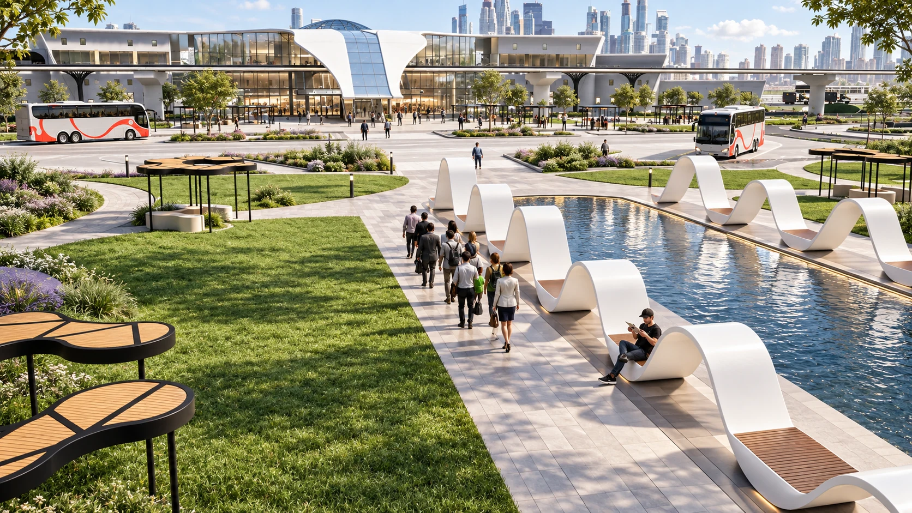
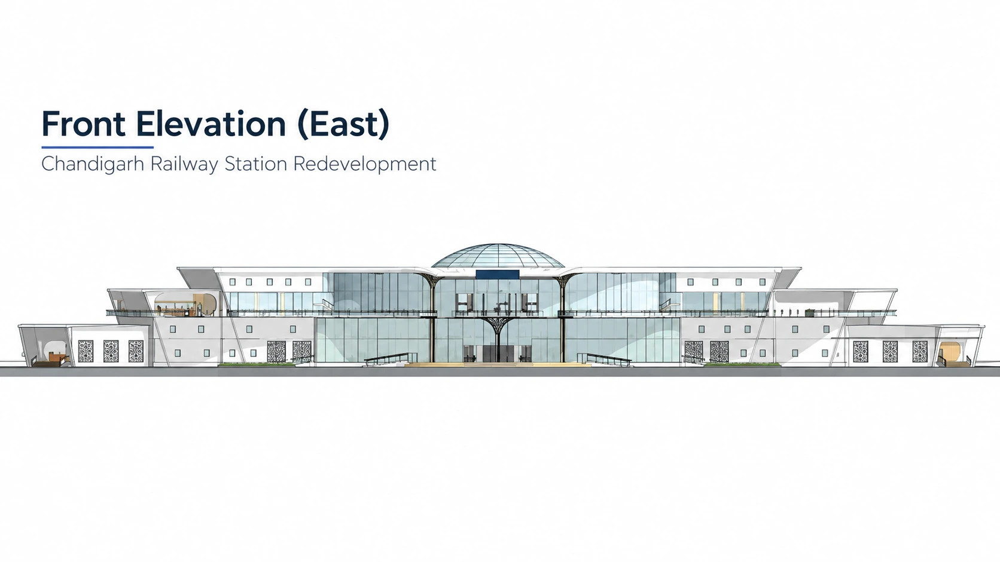
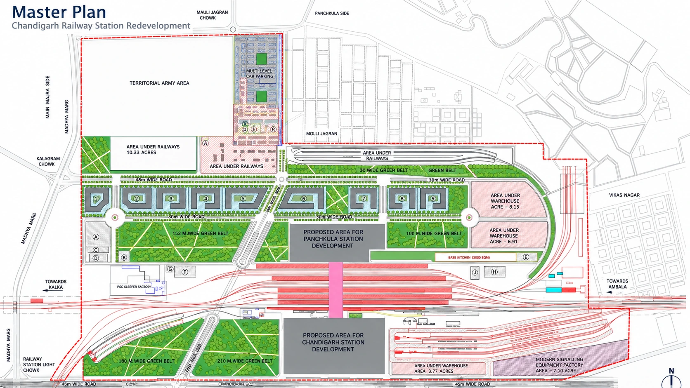
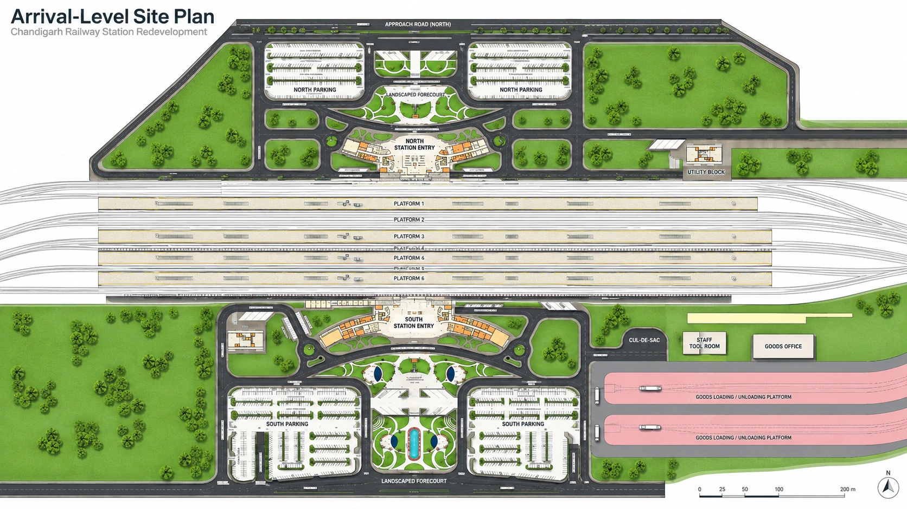
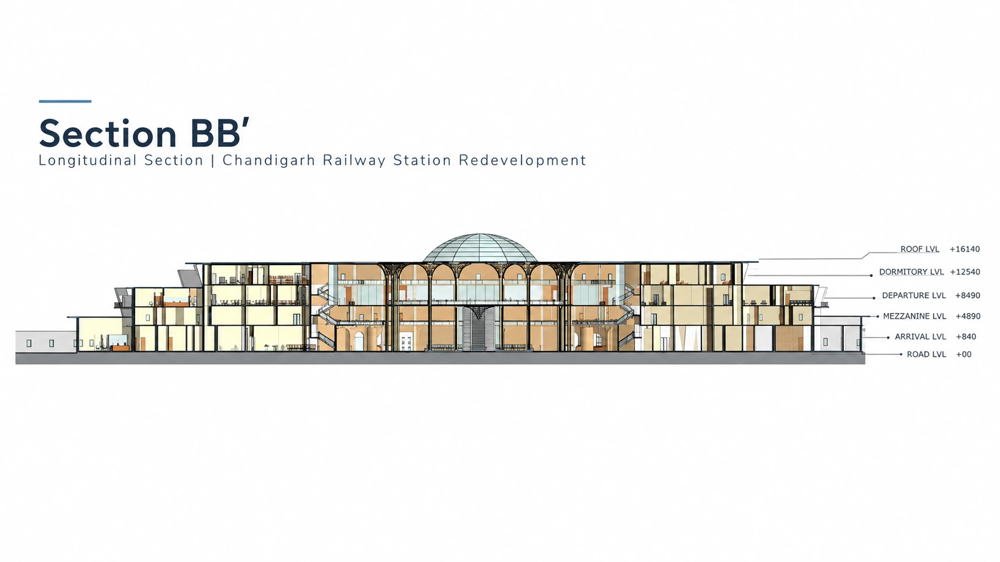

B.ARCH THESIS / 2020
Chandigarh
Railway Station
A redevelopment proposal shaped around clear movement, universal access, comfortable waiting, daylight, and a connected arrival experience.
 CONCOURSE + CENTRAL DOME
CONCOURSE + CENTRAL DOME
PROJECT OVERVIEW
A connected station
for a complex journey.
The proposal brings the north and south station entries into one coordinated passenger system. Arrival and departure movement, vertical circulation, security, landscape, road access, and station amenities are planned as parts of the same journey.
The architecture uses broad roof forms, a central glazed dome, and an open multi-level concourse to create visual connections across the station while bringing natural light deep into the public spaces.
- Project
- B.Arch Thesis
- Year
- 2020
- Type
- Public Infrastructure
- Status
- Academic Proposal
- Capacity
- Approx. 90,000 passengers
- Focus
- Redevelopment + Connectivity
EXPLORE THE PROPOSAL
Read the drawing.
Explore the vision.


DESIGN VISUALIZATIONS
Arrival, movement,
and public space.

PLANS + DRAWINGS
From site strategy
to architectural detail.

04 / Redevelopment master plan
05 / Arrival-level site plan
06 / Longitudinal section BB′ 07 / Front elevation · EastThe project merges station planning, landscape, circulation, and structure into one connected system designed around the passenger experience.
Select any image to view it at full size.